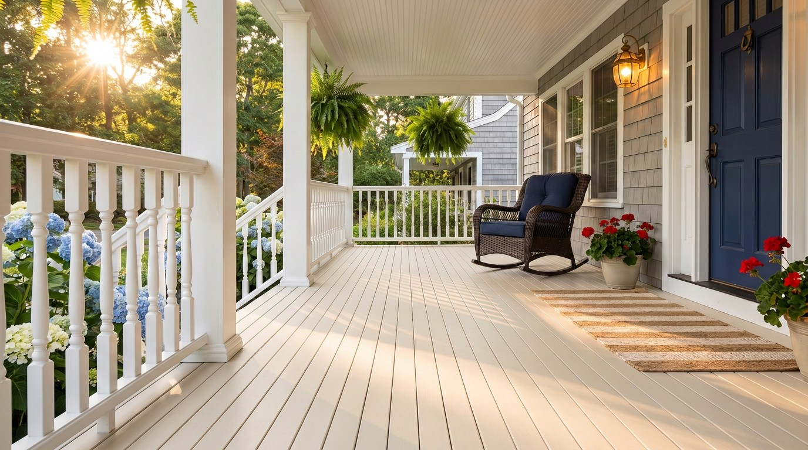
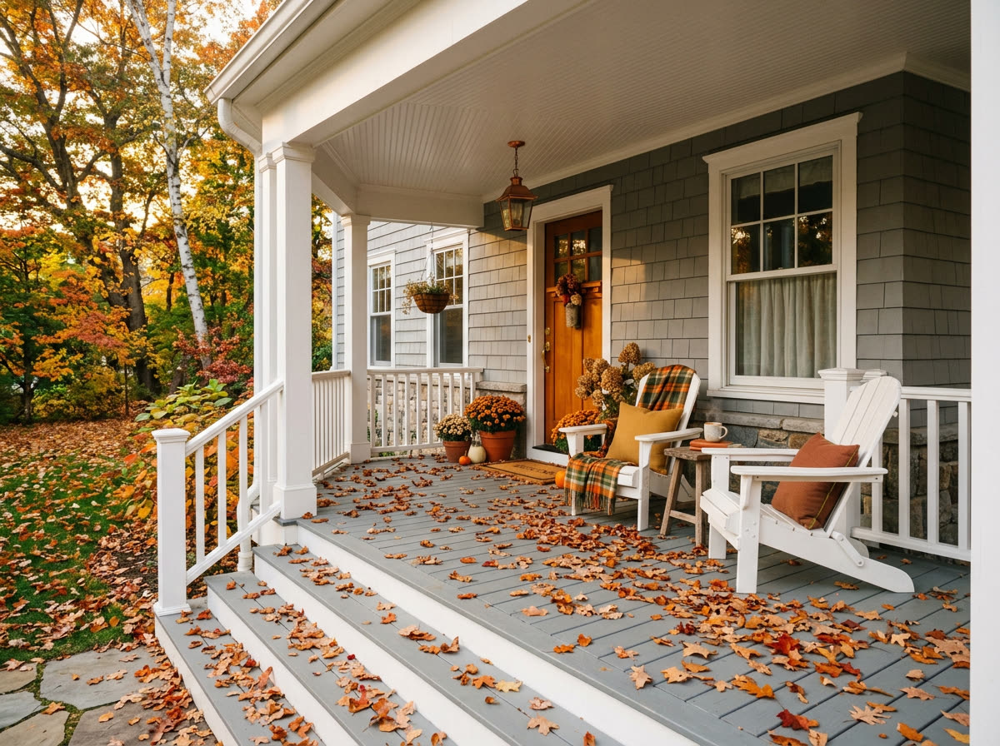

The porch that's
still here in twenty years.
American Pro porch flooring is engineered cellular PVC with a real wood-grain finish. Tongue and grooved boards in both 3/4" and 7/8" thicknesses, six colors, and a 25-year stain and fade limited warranty.
Six reasons it's the
last porch you'll install.
Every American Pro porch board is engineered to handle what porch boards actually go through: weather, wear, accidents, time. These are the six benefits we build for, on every plank.
Low Maintenance
Designed for minimal upkeep and easy cleaning. Enjoy a beautiful, hassle-free outdoor space without the need for constant attention.
Simple Installation
Installs the same way as wood. Save time and effort with easy-to-follow instructions and standard tools your installer already owns.
Fire Resistant
Engineered with fire-resistant properties for added safety. Peace of mind on every porch, in every season.
Fade Resistant
Long-lasting color that holds up to UV and weather. Maintain the vibrant appearance of your porch flooring for years.
Slip Resistant
A secure surface that minimizes the risk of accidents. Especially in the rain, snow, and morning dew where wood gets dangerous.
Environmentally Safe
Manufactured from partially repurposed polymers without sacrificing quality. A safer, sustainable choice for your home.
Choose the color that
belongs on your home.
Cool greys, warm browns, and rich reds. Every finish is rendered in embossed wood-grain on the surface of the board. Order free samples of any combination and compare them in your own light.

Replace your old porch.
Without replacing your porch.
American Pro porch boards install the same way painted pine has for a century. Same fastening pattern, same standard joist spacing, same tools. Your installer doesn't need a manual; they need a saw.
Easy replacement of an old porch. Bring new life to a tired one. Add value to your home.
Made from partially
repurposed polymers.
Sustainability isn't a marketing line for us, it's how we build. American Pro porch flooring is manufactured from partially repurposed polymers without sacrificing quality, durability, or finish.
It's a safer, sustainable choice for your home and a cleaner one for our shop floor.
Engineered.
Not assumed.
Full technical data sheets, installation instructions, and span guidance are available on request. Contact our sales team for project-specific engineering support.
Bring the porch
home first.
Choose any of our six finishes and we'll mail you full board samples. Compare them in your own light, against your siding, next to your trim. Free shipping. No follow-up calls unless you ask for them.
- Free shipping anywhere in the U.S.
- Real product, real wood-grain finish
- Ships within two business days